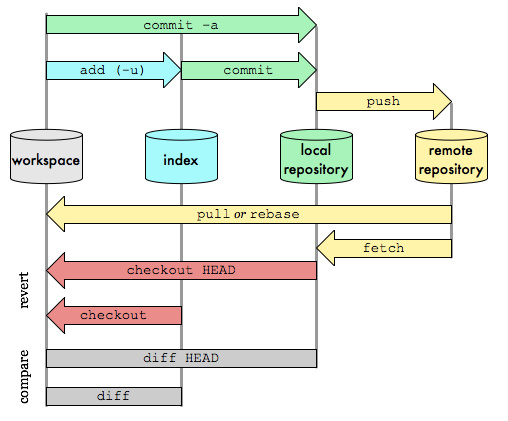

工具汇总
持续更新
Posted on Oct.24, 2019
Linux
- Tmux-终端复用https://www.cnblogs.com/kevingrace/p/6496899.html https://www.cnblogs.com/lizhang4/p/7325086.html
- tmux new -s sessionname ; ctrl b + ①% or " ; ②o ; ③ctrl+方向键 ④x
- ctrl+b x 是关闭当前面板。 会话session → 窗口window → 面板pane, 不要误操作了
- 恢复会话： tmux at [-t 会话名] 列出所有会话： tmux ls 关闭会话： tmux kill-session -t 会话名
- nohup
- nohup [command] & 挂在后台运行也是ok的 日志信息
日志信息进阶：nohup python3 -u src/main.py --cuda >./training.log 2>&1 & -u 参数 解决python执行有缓存输出的问题~
查看log：训练日志可能很长，使用cat比较费时，可以使用tail -n 5 training.log，来查看最后5行。更方便与watch搭配
linux工具进阶
工具参考篇
find . -print 2>/dev/null|awk '!/\.$/ {for (i=1;i < NF;i++){d=length($i);if ( d < 5 && i != 1 )d=5;printf("%"d"s","|")}
print "---"$NF}' FS='/'
find . -type d -print 2>/dev/null|awk '!/\.$/ {for (i=1;i < NF;i++){d=length($i);if ( d < 5 && i != 1 )d=5;
printf("%"d"s","|")}print "---"$NF}' FS='/'
远程文件传输
scp sftp ftp rsync
http://linux.51yip.com/search/lftp
是ftp的扩展和增强，比如支持mirror指令来传输文件夹。
批量上传多个文件：
sftp user@host <<EOF
put source1.pth target1.pth
put source2.pth target2.pth
put source3.pth target3.pth
EOF
可在后台进行：sftp命令 + ctrl z + bg命令
取一个别名：
alias scpr="rsync -P --rsh=ssh"
rsync就可以当作scp用，命令的语法类似。能更好的支持断点续传。
后台进行：scp命令 + ctrl z + bg命令
断开终端，之后再重新打开终端，执行jobs命令查看不到任务。
原因分析：
jobs是查看当前后台作业（进程），是获取本次bash进程下子进程的后台作业。
当本次终端退出后，后台作业变成孤儿进程，孤儿进程有系统父进程接管。
当再次连接终端时，原作业与当前终端，不存在关系父子关系，故看不到进程。
但是原作业，会在系统中一致运行，直到完成或被停止。
这就是为什么终端退出后，jobs看不到的原因了。
1、安装expect
2、script:
#! /usr/bin/expect -f
set passward "123456"
set timeout -1
spawn scp [-r如果是目录] localfile [remote_username@命令执行后只输入密码or用户名加密码]remote_ip:remote_folder
expect {
"(yes/no)?" {
send "yes\r"
expect "passward:"
send "$passward\r"
}
"*password:" {
send "$passward\r"
}
}
expect eof
3、expect scptest.sh
4、expect脚本我们都知道，首先spawn我们要执行的命令，然后就给出一堆expect的屏幕输出，
如果输出match了我们的expect的东西，我们就会send一个命令上去，模拟用户输入。
但是expect中等待命令的输出信息是有一个timeout的设定的，默认是10秒。这个特性是防止那些执行死机的命令的。
一旦到了这个timeout，还是没有屏幕输出的话，expect脚本中下面的代码就会执行。
关于建立信任连接： 一、实现原理 使用一种被称为"公私钥"认证的方式来进行ssh登录。"公私钥"认证方式简单的解释是： 首先在客户端上创建一对公私钥（公钥文件：~/.ssh/id_rsa.pub；私钥文件：~/.ssh/id_rsa）， 然后把公钥放到服务器上（~/.ssh/authorized_keys），自己保留好私钥。当ssh登录时，ssh程序会发送私钥去和服务器上的公钥做匹配。如果匹配成功就可以登录了。 step 1 : A机生成证书 ssh-keygen -t rsa step 2 : 查看~/.ssh 私钥id_rsa 公钥id_rsa.pub step 3 : A对B建立信任，将id_rsa.pub拷贝到B机的~/.ssh/authorized_keys里，>是覆盖，>>是追加。cat id_rsa.pub >> authorized_keys step 4 : 成功，A信任B，把公钥交给B。 A一般为服务器，可以从B免密登录 Note：不是root用户，.ssh都在~/.ssh 二.更新ssh密钥 1. 仍是生成公私钥 ssh-keygen -t ed25519 or rsa -C "comment" 。 Note：如果有同类型的密钥，会自动重命名。 2. 查看当前可被识别的密钥ssh-add -l 。 3. 清除所有可被识别的密钥ssh-add -D，清除指定可被识别密钥ssh-add -d ~/.ssh/oldsecret.pub 。 Note：ssh-add -d命令不会删除密钥文件本身,它只会从SSH代理程序(通常是ssh-agent)的密钥列表中删除指定的密钥。而直接删除密钥文件是更加"破坏性"的操作。在实际工作中,通常更建议使用 ssh-add -d 来暂时删除密钥,保留密钥文件。只有在确实不再需要该密钥时,才考虑直接删除密钥文件。 4. ssh-add ~/.ssh/newsecret 添加新的可识别密钥。 5. 再次查看当前可被识别的密钥ssh-add -l 。
Latex
- Latex表格 http://www.tablesgenerator.com/latex_tables# 正确用法:在Excel里画好，导入进去自动生成latex
- 论文压缩篇幅 https://blog.csdn.net/u011089523/article/details/83578005 https://blog.csdn.net/gokeyhps/article/details/46984497
- Arxiv 看到比较好的模板或公式，可以到Arxiv source里下载看该文章的源Latex文件
tar打包
Tips: 压缩是拖慢速度的环节，尤其当小文件很多时。很多情况我们并不需要压缩，只打包则快很多。我们在乎时间，不在乎占存时，不要使用-z。
tar压缩
- tar [选项] 文件或目录 解压tar -xf name.tar ———— x: extract, f: file
压缩tar -czf name.gz dir/ ———— c: create, z: gzip, f: file
检查tar -tf name.tar ———— t: list
对压缩包分割split -b 4000M -d(表示后缀是数字) -a 1(表示后缀1位数字，默认为两位) xx.gz xx.gz.
分割后的压缩包解压cat xx.gz.* | tar -xfv 检查图片数目tar -tf name.gz | grep png | wc -l
检查压缩包顺序tar -tf name.gz | head
只压缩文件，不要父目录tar -czvf name.gz test/*/*
批量解压ls *.tar.gz | xargs -n1 tar xzvf ◎
由于linux系统中的大多压缩程序只能对一个文件进行压缩，所以想要压缩一堆文件，就必须先进行打包，
把他们打包成一个tar类型的文件包裹，然后再对这个tar文件进行压缩。所以不管打包、解包、压缩、解压的命令都是以tar开头的，
而到底是打包、解包、压缩、还是解压？是由tar命令的选项决定的。
z就是用gzip这种方式压缩，所以czf就是把一堆文件创建成gzip形式的压缩文件。gz是gzip的简写。
Tar excluding ._ files: 现象：macOS系统用tar打包出现和各个文件同名的隐藏文件。 解决方案：tar -czv --no-mac-metadata -f file_name filelist 注意：参数顺序也是必要的。参考link
overleaf
- 国内服务 cn.overleaf.com
- 自动查错 下划红色波浪线的部分可能有拼写错误。虽然overleaf的拼写检查功能不完善。
draw.io
- 作图 和overleaf搭配是写论文的神器。并且GoogleDrive云端存储，跨平台友好。
ImageMagick and epstool
EPS文件格式又被称为带有预视图象的PS格式， 在Mac和PC环境下的图形和版面设计中广泛使用。- epstool eps处理以及转换到其他格式
brew install epstool
brew install ImageMagick convert image.png image.eps # For other image formats, the command is similar.
sudo convert ModelFramework.png -resize 1952x816 ModelFramework.eps
更方便的只指定宽高其中一个：sudo convert ModelFramework.png -resize 1952x-1 ModelFramework.eps
Pytorch/Tensorflow
https://mirrors.tuna.tsinghua.edu.cn/anaconda/cloud/pytorch/linux-64/Docker
- Docker Hello World https://www.runoob.com/docker/docker-hello-world.html
- Docker从入门到实践 https://yeasy.gitbooks.io/docker_practice/content/
Pip/Conda
- conda config --add channels https://mirrors.tuna.tsinghua.edu.cn/anaconda/pkgs/free/
conda config --set show_channel_urls yes - pip/pip3 install xx -i url
清华大学 https://pypi.tuna.tsinghua.edu.cn/simple/ 阿里云 http://mirrors.aliyun.com/pypi/simple/ 中国科技大学 https://pypi.mirrors.ustc.edu.cn/simple/ 豆瓣(douban) http://pypi.douban.com/simple/ 中国科学技术大学 http://pypi.mirrors.ustc.edu.cn/simple/
有些linux服务器处于内网，并且没有公网ip，故要想与外网进行http/https通信只能通过nat或者加proxy的方式。 这样的服务器可能就没法访问anaconda、pypi的官方源以及国内的清华源、科大源。 解决方法只有 ①打听公司内网的源，②export http/https_proxy代理。 在/etc/bashrc或者/etc/profile中添加如下环境变量： export http_proxy=http://1.1.1.1:8082 export https_proxy=http://1.1.1.1:8082 env | grep -i proxy 可以查看代理的情况。
1、在anaconda下用pip装包的原因：尽管在anaconda下我们可以很方便的使用conda install来安装我们需要的依赖，但是anaconda本身只提供部分包，远没有pip提供的包多，有时conda无法安装我们需要的包，我们需要用pip将其装到conda环境里。
2、用pip装包时候需要哪些注意事项？
2.1 首先，我们需要判断目前我们用的pip指令，会把包装到哪里，通常情况下，pip不像conda一样，他不知道环境，我们首先要确保我们用的是本环境的pip，这样pip install时，包才会创建到本环境中，不然包会创建到base环境，供各个不同的其他conda环境共享，此时可能会产生版本冲突问题（不同环境中可能对同一个包的版本要求不同）
which -a pip (如base环境的pip可能在/root/anaconda3/bin/pip；而其他conda环境的pip,可能在/root/anaconda3/envs/my_env/bin/pip)
2.2 经试验，anaconda4.8版本，在conda create新的环境时，已经默认在新环境装了pip，此时source activate进入该环境后，用pip命令安装的包，默认会装在本环境中,不必担心pip一个包后后会将其他环境的包改变版本的情况)
3、安装特定版本的包
conda用“=”，pip用“==”
conda install numpy=1.93
pip install numpy==1.93
SSH
- 避免SSH长时间不操作而卡死 SSH日常使用过程中经常出现的一个问题是：过长时间没有数据传输后SSH呈现卡死的状态 这是因为长时间没有数据传输的情况下，网络中间节点可能会强行断开连接 而SSH终端与服务器并不知情，于是此时操作就会出现卡死的现象。
设置SSH服务器或客户端的心跳包功能即可
客户端：编辑/etc/ssh/ssh_config，增加一行配置
ServerAliveInterval 60
服务端：编辑/etc/ssh/sshd_config，增加一行配置
ClientAliveInterval 60
还可添加ServerAliveCountMax 3 表示服务器发出请求后客户端未响应次数达到一定值就自动断开,正常情况下,客户端会正常响应.
shell
- shell script编程
- 注1 ：变量名和等号之间不能有空格，这可能和你熟悉的所有编程语言都不一样。
- 注2 ：推荐给所有变量加上花括号，这是个好的编程习惯。${ }会比较精确的界定变量名称的范围。lastname='hou' name=${lastname}'dewang'
- ${}搭配→Linux Shell截取字符串
- 注3 ：使用变量的时候才加美元符（$）
- 注4 ：字符串可以用单引号，双引号，也可不用引号。但单引号有限制，双引号里则有①可以有变量②可以出现转义字符的优点
- 注5 ：建议使用$(). 反引号``和$()的作用相同，用于命令替换（command substitution），即完成引用命令的执行，将其结果替换出来，与变量替换${}差不多。反引号是一个老的用法，$()是新的用法
- 注6 ：LogFile="./output.txt"可以搭配>>$LogFile输出日志。
- 注7 ：if条件判断的[ ... ]一定要前后留出空格，不然是bad pattern.
- 注8 ：数学计算
- ctrl + a/e 分别代表把光标移动到最前和最后
- ctrl + u/k 分别代表光标处往前和往后处全删除
- !惊叹号的用法 !
- history → !number 使用历史命令
SMB服务
- SMB（Server Message Block）是一种用于在计算机之间共享文件、打印机和其他资源的网络协议。随着时间的推移，SMB协议也经历了多次更新和改进。
关于SMB1.0（1984年）/2.0（2006年）/3.0（2012年），总结来说现在建议优先用3.0，也称SMB direct。1.0过时了且有安全问题，3.0相较2.0提供了更高的性能和更好的安全性。
fg/bg/job指令
进程相关指令- ctrl+c 终止前台进程;
- ctrl+z 挂起前台进程，并置于后台;
- kill %jobnumber 或 kill pid 终止前台进程;
- kill -stop PID 挂起后台进程;
- & 加在一个命令的最后，可以把这个命令放到后台执行;
- jobs 显示的是当前shell环境中所起的后台正在运行或被挂起的任务信息;
参数：-l选项可显示所有任务的PID
fg %jobnumber将选中的命令调出
bg %jobnumber将选中的命令调出
bg默认的当前任务是1号，即 bg 等同于 bg %1
Chrome
- 插件 Octotree
- 高级设置 chrome://flags/ 加速下载：Parallel downloading → Enable
其他主流浏览器类似：edge://flags/
Gdown
- v4.3.0 Mitigate PermissionError after many accesses to a particular file. releases
pip install --upgrade --no-cache-dir gdown
vim
- 命令 https://www.runoob.com/linux/linux-vim.html
- :set nu 行号对于调试还是很重要的
top
- 监控linux系统状况、性能分析
- cpu资源监控
top命令
[root@fpm_nginx /app]# top
top - 12:19:58 up 3:45, 1 user, load average: 0.00, 0.02, 0.05
Tasks: 91 total, 1 running, 90 sleeping, 0 stopped, 0 zombie
%Cpu(s): 0.3 us, 0.3 sy, 0.0 ni, 99.3 id, 0.0 wa, 0.0 hi, 0.0 si, 0.0 st
KiB Mem : 995896 total, 695140 free, 94524 used, 206232 buff/cache
KiB Swap: 2097148 total, 2097148 free, 0 used. 731568 avail Mem
PID USER PR NI VIRT RES SHR S %CPU %MEM TIME+ COMMAND
6370 root 20 0 573936 17236 6096 S 0.3 1.7 0:05.52 tuned
9977 root 20 0 161892 2172 1548 R 0.3 0.2 0:00.73 top
第一行:
top - 12:19:58 up 3:45 # 系统已运行3小时45分钟，当前时间系统时间-12:19:58
1 user # 当前在线的用户数量
load average: 0.00, 0.02, 0.05 # 服务器的负载，1min的负载、5min的负载、15min的负载
第二行:
Tasks: 91 total # 当前有91个工作任务
1 running # 1个正在执行的
90 sleeping # 90个在休眠的
0 stopped # 没有被停止的
0 zombie # 没有僵尸进程
第三行:
%Cpu(s): 0.3 us, 0.3 sy # 用户使用cpu的百分比 (us:用户态, sy:内核态)
ni # 优先级
99.3 id # cpu空闲程度
0.0 wa # 等待的状态的进程占cpu的百分比
0.0 hi # 硬中断
0.0 si # 软中断
0.0 st # 虚拟机占用物理机的百分比
监控项名称 / 监控项含义
Host.cpu.idle 当前空闲CPU百分比(%)
・当前CPU处于空闲状态的百分比
Host.cpu.system 当前内核空间占用CPU百分比(%)
・指系统上下文切换的消耗,该监控项数值比较高，说明服务器开了太多的进程或者线程
Host.cpu.user 当前用户空间占用CPU百分比(%)
・用户进程对CPU的消耗
Host.cpu.iowait 当前等待IO操作的CPU百分比(%)
・该项数值比较高说明有很频繁的IO操作
Host.cpu.other 其他占用CPU百分比(%)
・其他消耗，计算方式为（Nice + SoftIrq + Irq + Stolen）的消耗
Host.cpu.totalUsed 当前消耗的总CPU百分比(%)
・指以上各项CPU消耗的总和，通常用于报警
py-spy性能调试工具
step 1. 运行起程序
step 2. pgrep -f xxx.py 查看python程序的PID。
step 3. 实时观测或离线统计cpu时间火焰图
sudo env "PATH=$PATH" py-spy top --pid PID 实时
sudo env "PATH=$PATH" py-spy record -o profile.svg --pid PID 火焰图
scalene性能调试工具
会比py-spy更强大一点:
1. 能分析Python code vs. native code
"native": non-Python code (e.g., libraries written in C/C++).
2. 行级别的CPU分析，相较大多数分析器只支持的功能级别的CPU分析，可能会更有用。
使用方式：
nohup python3 -u -m scalene --html --no-browser --- test.py --arg1 para1 --arg2 para2 --argN paraN >test.log 2>&1 &
最后html script会写入test.log。
CPU quota限制工具
有时程序本身难以优化cpu消耗，这时使用cpu性能限制工具也是可行的。
example: cpulimit -l 500 -- python3 test.py
-l, --limit=N percentage of cpu allowed from 1 up.
Usually 1 - 6400, but can be higher
on multi-core CPUs (mandatory)
example: task -c 500 python3 test.py
-c, --cpu-list display and specify cpus in list format
note: Interpret mask as numerical list of processors instead of a bitmask. Numbers are separated by commas and may include ranges. For example: 0,5,8-11.
/proc/stat是系统自带的记录cpu累积负载数据的文件。虽然mpstat、top都是调用它的。如果直接观察它还得把一个时刻的累积负载减去前一个时刻的，才能得到时间段内的cpu负载，甚至实时负载。 没mpstat、top方便。不过这些命令的输出格式可能是与系统有关的，不要轻易在程序里使用，以免解析错误。
小知识：许多系统监控工具（如 top、htop）会利用/proc/stat的累积数据，通过多次读取和计算，给出实时的使用率和负载情况。
crontab
- 定时执行程序
- crontab -e 编辑
- crontab -l 查看
0 * * * * top -b | head -n 20 >>/data/devonn/watchcpu.log 2>&1 每小时查看一下top，有点特殊的是需要使用-b参数，才能让top的输出传到另一个文件 0 * * * * nvidia-smi >>/data/devonn/watchgpu.log 2>&1 每小时查看一下nvidia-smi /var/spool/cron/crontabs/ 查看每个用户的定时任务，然后如果是定时记录log，注意别冲突了，写成同一个路径的文件。
visio
- 自动对齐 ctrl多选 ；开始→排列 ；开始→位置
- 画水平直线 压住shift再拉长度。 这个会经常用到
- 手动调整 视图→视觉帮助→对齐(取消) ；视图→网格(勾选)
- 输出保存png 文件→另存为可移植网络图形（*.png）
HDFS
Hadoop is the framework that has the storage and the processing unit. The storage unit of Hadoop is called HDFS - Hadoop Distributed File System. The processing unit is called MapReduce.- 命令基本格式 hdfs dfs -cmd < args >
- hadoop fs VS hadoop dfs VS hdfs dfs three commands which appears same but have minute differences.
hadoop fs < args >FS relates to a generic file system which can point to any file systems like local, HDFS etc. So this can be used when you are dealing with different file systems such as Local FS, (S)FTP, S3, and others.
hadoop dfs < args >dfs is very specific to HDFS. would work for operation relates to HDFS. This has been deprecated and we should use hdfs dfs instead.
hdfs dfs < args >same as 2nd i.e would work for all the operations related to HDFS and is the recommended command instead of hadoop dfs.
Jenkins
- 进度条 进度条通常是空的，在建立进度时填充蓝色。 进度条填写的时间是根据估计的工作持续时间。这个估计通常是基于最后几次成功建成的平均持续时间。 如果没有以前的工作数据进行时间估计，进度条将显示一条带状蓝色的动画。 当构建执行器“可能卡住”（“卡住”定义为建造时间比估计长十倍。如果没有估计，任何长于24小时的建设被认为是卡住的。）时， 红色属性被设置，即它比预计完成的时间要长得多。
ffmpeg
- ffmpeg所有的参数都是作用于紧跟其后的文件，因此参数的顺序相当重要。
# input seeking
ffmpeg -ss 00:1:05 -i gemfield.mp4 -frames:v 1 out.jpg
# output seeking
ffmpeg -i gemfield.mp4 -ss 00:1:05 -frames:v 1 out1.jpg
上述两种就是有区别的。
ffmpeg -r 15 -i input output
ffmpeg -i input -r 15 output
假设原本是30fps，第一种会使其输出文件的时长分别为原来的两倍，第二种时长不变，但码流理论上为输入文件的一半左右。
ffmpeg -i rawvideo.y4m -c:v libx265 -x265-params bframes=0:no-deblock=1:no-sao=1:qp=37 qp37.mp4
不过编解码组不怎么用ffmpeg，而是用更好用的HM(HEVC Test Model)，修改cfg文件就好了。
这两个是HEVC的两种编码配置，你用的HM的话，在cfg文件夹里面应该有各种编码配置。如果用的x265，需要自己通过命令行去配置各种参数。
vscode
- 带参数调试 Debug->Open Configurations(打开配置) 在对应的代码块中添加args,注意参数之间需要用字符串分割开，用空格是不行的"--model","EDVR"
- 整段缩进 Ctrl+[ ]
- 养成太长换行习惯 \
- 打开多个文件夹 将文件夹添加到工作区
pycharm
写 Python 代码时，你会严格遵守 pep8 规范么？ 还是要遵守的，不然代码传到 github 或者知乎上被人怼就不好了。 但是如果靠肉眼去检查和注意的话，太累，靠 PyCharm 来做这事就好， Command+Option+L，一键 pep8 走起。
其他: Ctrl + D 复制上一行；
调试
写程序最痛苦的事情莫过于调试，程序往往会以你意想不到的流程来运行，你期待执行的语句其实根本没有执行，这时候，就需要调试了。- 如果要比较爽地设置断点、单步执行，就需要一个支持调试功能的IDE。目前比较好的Python IDE有：VS Code，Pycharm Debug心得
- 虽然用IDE调试起来比较方便，但是最后你会发现，logging才是终极武器。
- print()——打印，最大坏处是将来还要删掉它，不然运行结果会包含很多垃圾信息
- assert——断言，程序中如果到处充斥着assert，和print()相比也好不到哪去。不过，启动Python解释器时可以用-O参数来关闭assert
- logging——不会抛出错误，而且可以输出到文件
|Step Over|Step Into|Step Out|Resume Program到下个断点|Run to Cursor到光标|
import logging
logging.basicConfig(filename='./LOG/training.log', level=logging.INFO)
logging.info("info message")
简书 logging遇到多进程 python中由于某种历史原因，多线程的性能基本可以无视。所以一般情况下python要实现并行操作或者并行计算的时候都是使用多进程。但是 python 中logging 并不支持多进程，所以会遇到不少麻烦。 logging 模块是线程安全的，但不能保证多进程安全。
github开源项目
- 组合搜索 ①in:name/description/readme 超分 ②satrs:>1000 ③pushed:>2020-1-15 ④language:python
- 高级搜索 上面记不住，可以直接进入 github.com/search/advanced 对表单进行编辑
- 话题搜索 github.com/topics
- 隐藏技巧 see comments
github项目徽章
- 介绍
- https://shields.io/
- https://badgen.net/
- https://forthebadge.com/
- https://badge.fury.io/
- https://badge.fury.io/
Git
-
Git有三个分区：工作目录(working directory)、索引(index)、Git仓库(git repository)。当你修改文件，执行git add，再执行git commit时，Git的底层数据变化如下图。
- 图解Git
- Learn Git Branching
- Git飞行规则(Flight Rules)
- 最简workflow
首先Connecting to GitHub/GitLab with SSH 参照
0.查看是否登录 git config --list 1.登录 git config --global user.name "github用户名" git config --global user.email "邮箱地址" 2.准备提交的本地项目 git init "path" git add . (提交所有) or git add +文件名 (提交单个文件) 如果是仅修改，可以用git commit -a，跳过add。如果想分多次commit，可以用git stage。 git commit -m "First commit" 3.绑定远程仓库 git remote add origin git@github.com:dwhou/xxx.git 'origin'只是个别名 4.推到master分支 git push -u origin master 三个建议： 0. 建议git commit前，看看git diff HEAD，了解当前工作区和最新commit的区别。 1. 建议git commit前先试试能不能通过编译（记得所有的依赖库都pull到最新）。 2. 建议git push前先看看diff，git diff HEAD^1是当前工作区和上次commit的区别（如果刚commit马上查看，当前工作区相当于就是HEAD，等同于git diff HEAD^1 HEAD，所以一般简写），HEAD~2是上2次，依次类推。SourceTree软件里默认是git diff SHA^1 SHA。 git diff a b, diff显示的结果表示 后一个(b) 相对于 前一个(a)的修改。省略后一个时，后一个默认是workspace。 补充建议： 3. 一般git push会提示merge request的网址。建议在PR或MR的GitLab页面再一次检查下change（就是git diff）。 关于git diff：（图片引用自[1]）  实际完整命令是： git push -u origin <本地分支名称>:<远程分支名称> 但本地、远端相同名称时可以省略掉 “<本地分支名称>:”，也就是我们常见的形式。然后如果是用“ :<远程分支名称>” 则表示删除远端分支，因为这相当于把空的东西push到远端嘛。git pull类似。 -u或--set-upstream选项用于将本地分支与远程分支关联起来。将本地（远程）分支设置为远程（本地）分支的上游分支。这样，你在后续只需执行git push/pull即可将更改推送/拉取到关联的分支。 仅添加文件、文件夹到已有仓库某路径下 0. above ; 1. above ; + git clone git@github.com:dwHou/xx.git 2. above ; 3. above; 4. above. Git Commit + Pull + Push三步大法 1、git clone 与 git pull 相同点 相同点：都是从远程服务器拉取代码到本地 2、git clone 与 git pull 不同点 git clone git clone --depth=1 -b master xxxxxx.git 当仓库过大时，只克隆某个指定分支的最近一次commit。depth=1表示只克隆最近一次commit，-b指定分支。最终减小下载文件的数目。 2-1、重新拉取其他分支： $ git remote set-branches origin 'remote_branch_name' $ git fetch --depth 1 origin remote_branch_name $ git checkout remote_branch_name git remote 命令，用来管理追踪的远程分支，git ls-remote origin可以列出所有远程分支。 2-2、重新拉取全部历史： $ git fetch --unshallow 3、放弃所有本地更改，用远程分支覆盖 git fetch --all git reset --hard 'remote'/'branch_name' 或者 commit SHA 比如 origin/master或cf26392a...1d5b6 (推荐用后者，SHA) git pull 建议放弃本地更改都用该方法，而不是git stash，后者感觉老是弄出冲突。 4、git可视化命令，查看仓库的所有历史提交记录 git log --graph --oneline --all git pull 在本地有版本库的情况下，从远程库获取最新commit 数据（如果有的话），并merge（合并）到本地。 人生不如意之事十之八九，合并分支往往也不是一帆风顺的。当merge存在冲突时，需要解决冲突： 详细参考廖雪峰的文章 具体是git status查看哪些文件冲突，然后打开文件后将看到Git用<<<<<<<，=======，>>>>>>>标记出不同分支的内容。一些IDE或其插件，会有快捷的选择不同分支内容的点击项，方便快速解决冲突。 git pull = git fetch + git merge git pull遇到远程有其他协作者的commit，和本地的commit不是fast-forward了。这时可以合并（merge）或者变基（rebase），前者历史记录更完整，后者的提交历史更直线。无论是合并还是变基，都可能遇到冲突，解决冲突的过程类似。 3、使用场景 通常情况下，远程操作的第一步，是使用git clone从远程主机克隆一个版本库到本地。 本地修改代码后，每次从本地仓库push到远程仓库之前都要先进行git pull操作，保证push到远程仓库时没有版本冲突。 push前务必使用diff或者sourcetree的可视化界面查看修改。 4、关于分支 https://www.orchome.com/8160 可以使用git branch -vv 看到本地和远程分支的对应关系。并随时用checkout切换分支。 5、关于用户权限 有时候从个人账户切回公司账户，仍然报错：邮箱不符合规范 https://blog.csdn.net/weixin_44296929/article/details/116984606 https://cloud.tencent.com/developer/article/1352623 （这个方法只是改一下log，欺骗眼睛，没有实际用处。） 所以最好还是养成习惯每次使用前检查账户。 6、强制同步远程分支 有时候git被弄乱了，希望强制同步为远程分支。可以： mv -v .git .git_old && # Remove old Git files git init && # Initialise new repository git remote add origin "${url}" && # Link to old repository git fetch && # Get old history git reset origin/master --hard # Force update to old history
对git提交进行签名可以使用GPG: 提交签名 如果有仓库不需要GPG的，可以vim .git/config 添加如下几行： [commit] # https://help.github.com/articles/signing-commits-using-gpg/ gpgsign = false
Git内部原理
经常有人说Git简单，Pull&Commit&Push，又经常有人说Git复杂难懂。最经常听到的抱怨是Git的命令容易混淆。 如果你不懂一个东西的内部原理，有时它会变得十分混乱。 https://www.bilibili.com/video/BV1RJ411X7kh 1.Git是如何存储信息的？
Sourcetree使用
提供了美观的UI，不过我们使用的时候还是可以在菜单栏里选择终端，再使用命令行。毕竟软件会有bug。